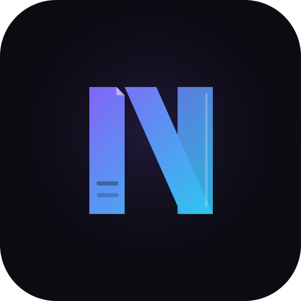
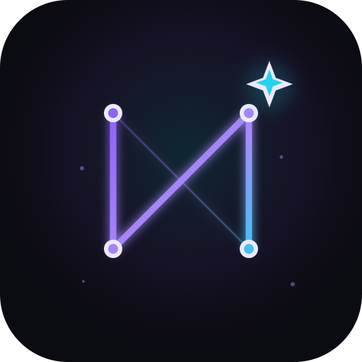
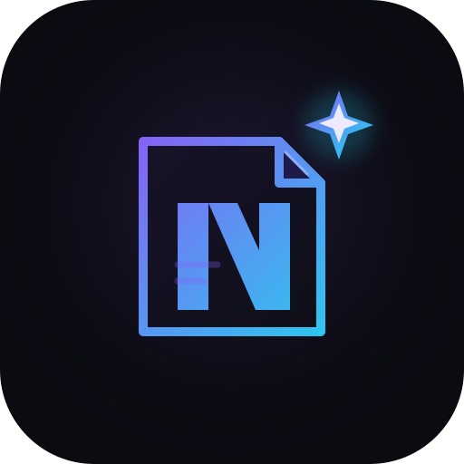

NovaMente
Documentação que ensina
Conceito 1 · N de páginas
A letra que vira página
O N é construído com hastes que lembram uma folha aberta e um canto dobrado. É a
direção mais corporativa e legível, com cara de produto sério sem perder a ligação
com conteúdo.
FuncionaEscala muito bem, é simples de reproduzir e conversa com educação e documentação.
RiscoPode ficar genérico se o desenho não ganhar um detalhe proprietário no refinamento.
violeta · ciano · grafite

NovaMente
Conhecimento que se adapta
Conceito 2 · N constelação
A nova estrela do conhecimento
O N vira uma constelação: nós conectados representam o grafo/RAG, e a estrela mais
brilhante representa a “nova” mente. É a direção mais distintiva e a que melhor
traduz a inteligência por trás do produto.
FuncionaÉ memorável, tecnológica e ainda legível em tamanho pequeno; ótima para favicon e animações.
RiscoSe exagerar no brilho, pode parecer uma marca de IA genérica; o refinamento deve manter as linhas contidas.
lilás · ciano · luz

NovaMente
Da página à descoberta
Conceito 3 · página + faísca · escolhido
O clique do entendimento
Uma página que se dobra em N e libera uma faísca. É a direção mais humana e
pedagógica: fala do momento em que um documento difícil vira algo que o aluno
consegue entender.
FuncionaTem a narrativa mais clara para educação e cria uma metáfora fácil de usar em campanhas.
RiscoÉ a mais complexa em tamanhos pequenos; exige uma versão simplificada só com a faísca.
violeta · ciano · noite
Abrir kit de teste do conceito 3 →